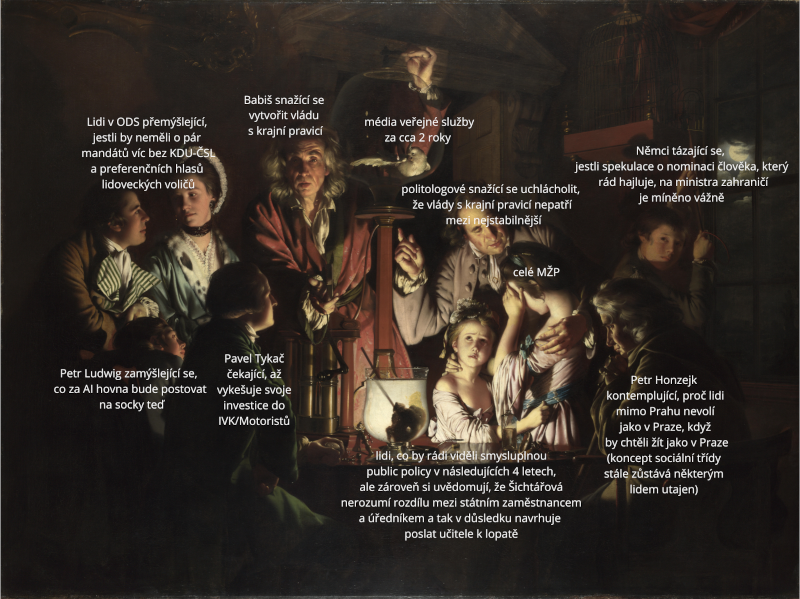

V očekávání výsledků voleb jsem podal dva post-doc projekty. Jak moc který chci dostat je přímo úměrné soutěži o jejich udělení. Taky úměrné tomu, kolik jsem na kterém strávil času. Což pravděpodobně znamená, že jsem vyplýtval spoustu času. Kdyby 100 % času bylo strávené na psaní projektu, který se pravděpodobně bude dát uplatnit při nějaké jiné příležitosti, bylo by to snesitelnější. Ale čas zabrala též příprava životopisu, career statement-u (což si pořád nejsem jistý, co je), motivačních dopisů (které indikují hlavně to, jak moc je žadatel schopný psát motivační dopisy), shánění doporučujících dopisů atd.
Jedna z postav v The Diplomat (třetí série, epizodu nevím) říká:
A: There is not another better CIA or America. The ones we have are fucked-up. We make compromises. Some days, we feel okay about that. Some days, we have gin.
Volby, kromě špatných věcí jako podíl krajní pravice na vládě a z toho vyplývajících budoucích nativistických/napiču policies, přinesly i dobré věci. Podíval jsem se kvůli nim do Londýna na debatu na UCL o *drumroll* volbách. Ale hádám, že bych tam jel bez ohledu na výsledek voleb, takže asi nic.
Sice jsem se zapomněl zeptat, jestli nehledají postdoka, ale podíval jsem se do LRB, abych si koupil eseje Rebeccy Solnit:
These days I think of myself as a tortoise at the mayfly party. By that, I mean I try to see the long trajectory of events leading to the present moment, because it takes time to see change, and understanding change is essential to understanding politics and culture, let alone trying to participate in them. The short view generates incomprehension and ineffectuality.
Též jsem se podíval do londýnské národní galerie. An Experiment on a Bird in the Air Pump bengoval.

Jako (skoro) každý měsíc i tento jsem přemýšlel, co se zvrtlo s internetem.
As a teenager, access to that early internet was exciting, promising; it allowed me to see beyond the stifling myopia of my suburban upbringing. But as is essentially always the case when capitalism enters the scene, what once seemed promising proved disappointing, and what once felt exciting has begun to feel routine, limiting, even oppressive. To be online in 2025 feels like being at work, and there’s often a felt obligation to produce, hustle, brand and rebrand. (https://www.pi.fyi/p/internet-mon-amour-by-brad-phillips)
Also fuck French post-modern theories.
They wouldn’t let me buy the vintage copies of Playboy until I turned 18, but I wish they’d had a much stricter policy for French theory. (https://kevinmunger.substack.com/p/knausgaard-discovers-the-computer)
Moje srdce zůstává tzv. v regionech.
My heart’s in the Highlands, my heart is not here,
My heart’s in the Highlands, a-chasing the deer;
Chasing the wild-deer, and following the roe,
My heart’s in the Highlands, wherever I go.